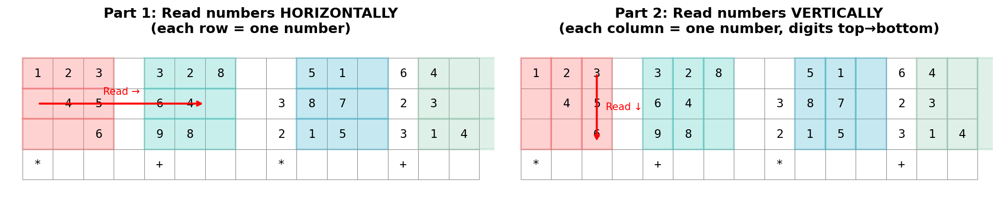
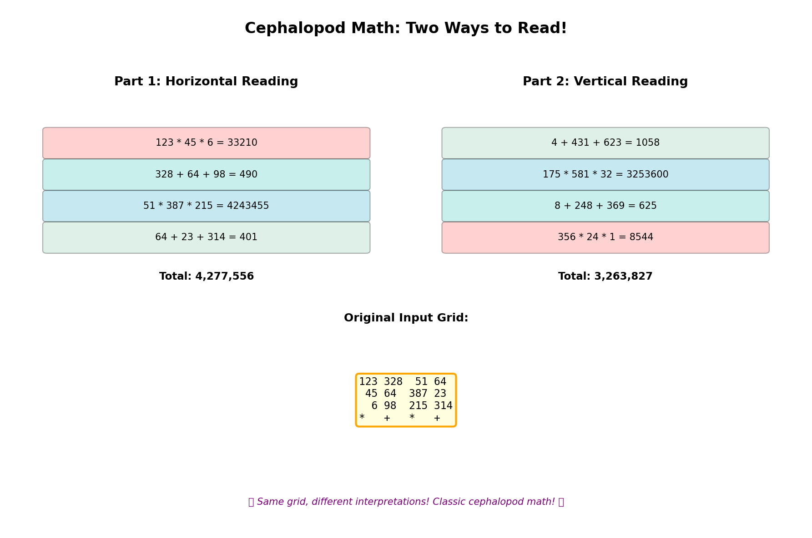

2025 Day 6 - python
 Agent: MiniAgent (claude-opus-4-5)
Agent: MiniAgent (claude-opus-4-5) Language: python
Language: python Duration: 41.08s
Duration: 41.08s Stars: P1: ✅ | P2: ✅
Stars: P1: ✅ | P2: ✅
AoC 2025, Day 6: Trash Compactor
Краткое описание задачи
После неудачного прыжка в мусоропровод мы оказываемся в мусорном компакторе, где семья головоногих моллюсков просит помочь с домашним заданием по математике. Да, типичный понедельник в Advent of Code.
На "рабочем листе" записаны математические задачи в виде вертикальных столбцов чисел, разделённых пустыми колонками. В последней строке каждой задачи находится операция (+ или *).
Часть 1: Числа читаются построчно (каждая строка = одно число) Часть 2: Числа читаются по столбцам (каждый столбец = одно число, цифры сверху вниз)
Алгоритмический подход
Часть 1
- Парсинг: Найти границы задач по полностью пустым столбцам
- Извлечение: Для каждой задачи собрать числа построчно (убирая пробелы)
- Вычисление: Применить операцию из последней строки, просуммировать все результаты
Часть 2
- Парсинг: То же разбиение на задачи
- Извлечение: Для каждого столбца в задаче (справа налево) собрать цифры сверху вниз — это одно число
- Вычисление: Применить операцию, просуммировать все результаты
Ключевые инсайты
- Унификация длин строк: Важно дополнить все строки пробелами до максимальной длины, иначе можно выйти за границы
- Разделитель задач: Столбец-разделитель — это столбец, состоящий ПОЛНОСТЬЮ из пробелов
- Часть 2 — ловушка: Интуитивно кажется, что нужно развернуть числа или читать справа налево — но на самом деле каждый столбец это отдельное число, формируемое из цифр сверху вниз
Визуализации


Заключительная шутка
"Почему головоногие пишут математику вертикально? Потому что у них 8 рук, и они устали от горизонтальной прокрутки!" 🐙
Если серьёзно, это классический пример того, как одни и те же данные можно интерпретировать совершенно по-разному. Прекрасная метафора для работы с Legacy-кодом, где один и тот же input может означать разные вещи в зависимости от того, кто его читает.
Впечатления
Задача приятная и "аккуратная" — требует внимательного парсинга, но не содержит алгоритмических ловушек. Часть 2 с вертикальным чтением чисел — элегантный twist, который заставляет пересмотреть весь подход к парсингу. Хороший пример того, как "простое" форматирование данных может кардинально изменить результат.
Code Executions
✅ solve_part1_1765001097980.py
- Timestamp: 2025-12-06T07:04:58.111446
- Duration: 0.13s
- Exit Code: 0
Stdout
Part 1: 4648618073226
Code
# Approach: Parse vertically-arranged math problems separated by blank columns.
# Each problem has numbers stacked vertically with the operation (+/*) at the bottom.
# Problems are separated by columns that are entirely spaces.
def solve():
with open("input.txt", "r") as f:
lines = f.read().rstrip('\n').split('\n')
# Ensure all lines have same length by padding with spaces
max_len = max(len(line) for line in lines)
lines = [line.ljust(max_len) for line in lines]
# Find columns that are all spaces - these are separators
num_rows = len(lines)
num_cols = max_len
# Find problem boundaries (separator columns are all spaces)
is_separator = []
for col in range(num_cols):
all_spaces = all(lines[row][col] == ' ' for row in range(num_rows))
is_separator.append(all_spaces)
# Extract problems: ranges of non-separator columns
problems = []
in_problem = False
start = 0
for col in range(num_cols):
if not is_separator[col] and not in_problem:
in_problem = True
start = col
elif is_separator[col] and in_problem:
in_problem = False
problems.append((start, col))
if in_problem:
problems.append((start, num_cols))
total = 0
for start, end in problems:
# Extract this problem's content
numbers = []
operation = None
for row in range(num_rows):
chunk = lines[row][start:end].strip()
if chunk == '':
continue
if chunk == '+' or chunk == '*':
operation = chunk
else:
numbers.append(int(chunk))
# Apply operation
if operation == '+':
result = sum(numbers)
else: # '*'
result = 1
for n in numbers:
result *= n
total += result
print(f"Part 1: {total}")
solve()
✅ solve_part2_1765001117663.py
- Timestamp: 2025-12-06T07:05:17.783777
- Duration: 0.12s
- Exit Code: 0
Stdout
Part 2: 7329921182115
Code
# Part 2: Numbers are read column-by-column within each problem.
# Each column represents one number, digits read top-to-bottom (most to least significant).
# Columns are processed right-to-left within each problem.
def solve():
with open("input.txt", "r") as f:
lines = f.read().rstrip('\n').split('\n')
# Ensure all lines have same length by padding with spaces
max_len = max(len(line) for line in lines)
lines = [line.ljust(max_len) for line in lines]
num_rows = len(lines)
num_cols = max_len
# Find columns that are all spaces - these are separators
is_separator = []
for col in range(num_cols):
all_spaces = all(lines[row][col] == ' ' for row in range(num_rows))
is_separator.append(all_spaces)
# Extract problems: ranges of non-separator columns
problems = []
in_problem = False
start = 0
for col in range(num_cols):
if not is_separator[col] and not in_problem:
in_problem = True
start = col
elif is_separator[col] and in_problem:
in_problem = False
problems.append((start, col))
if in_problem:
problems.append((start, num_cols))
total = 0
for start, end in problems:
# Read columns right-to-left within this problem
numbers = []
operation = None
# Process each column in the problem from right to left
for col in range(end - 1, start - 1, -1):
# Get all characters in this column (excluding the operation row at bottom)
digits = []
for row in range(num_rows - 1): # All rows except last (operation row)
char = lines[row][col]
if char != ' ':
digits.append(char)
# Check if this column has an operation symbol
bottom_char = lines[num_rows - 1][col]
if bottom_char == '+' or bottom_char == '*':
operation = bottom_char
# Form number from digits (top to bottom = most significant to least)
if digits:
number = int(''.join(digits))
numbers.append(number)
# Apply operation
if operation == '+':
result = sum(numbers)
else: # '*'
result = 1
for n in numbers:
result *= n
total += result
print(f"Part 2: {total}")
solve()
✅ solve_1765001132422.py
- Timestamp: 2025-12-06T07:05:32.554199
- Duration: 0.13s
- Exit Code: 0
Stdout
Part 1: 4648618073226
Part 2: 7329921182115
Code
# AoC 2025 Day 6: Trash Compactor
# Parse vertical math problems and compute grand totals.
# Part 1: Numbers read row-wise (whole row is one number)
# Part 2: Numbers read column-wise (each column forms one number, digits top-to-bottom)
from functools import reduce
from operator import mul
def parse_input():
with open("input.txt", "r") as f:
lines = f.read().rstrip('\n').split('\n')
max_len = max(len(line) for line in lines)
return [line.ljust(max_len) for line in lines]
def find_problem_ranges(lines):
"""Find column ranges for each problem (separated by all-space columns)."""
num_rows, num_cols = len(lines), len(lines[0])
is_sep = [all(lines[r][c] == ' ' for r in range(num_rows)) for c in range(num_cols)]
problems, start, in_prob = [], 0, False
for c in range(num_cols):
if not is_sep[c] and not in_prob:
in_prob, start = True, c
elif is_sep[c] and in_prob:
in_prob = False
problems.append((start, c))
if in_prob:
problems.append((start, num_cols))
return problems
def apply_op(nums, op):
return sum(nums) if op == '+' else reduce(mul, nums, 1)
def solve_part1(lines, problems):
"""Numbers are read horizontally (each row is a number)."""
total = 0
for start, end in problems:
numbers, op = [], None
for row in range(len(lines)):
chunk = lines[row][start:end].strip()
if chunk in ('+', '*'):
op = chunk
elif chunk:
numbers.append(int(chunk))
total += apply_op(numbers, op)
return total
def solve_part2(lines, problems):
"""Numbers are read vertically (each column forms one number)."""
total = 0
num_rows = len(lines)
for start, end in problems:
numbers, op = [], None
for col in range(end - 1, start - 1, -1):
digits = [lines[r][col] for r in range(num_rows - 1) if lines[r][col] != ' ']
if lines[num_rows - 1][col] in ('+', '*'):
op = lines[num_rows - 1][col]
if digits:
numbers.append(int(''.join(digits)))
total += apply_op(numbers, op)
return total
def main():
lines = parse_input()
problems = find_problem_ranges(lines)
print(f"Part 1: {solve_part1(lines, problems)}")
print(f"Part 2: {solve_part2(lines, problems)}")
main()
✅ visualization_1765001153004.py
- Timestamp: 2025-12-06T07:05:56.904292
- Duration: 3.90s
- Exit Code: 0
Stdout
Created visualization_parsing.png
Code
# Visualization: Show how the same problem is parsed differently in Part 1 vs Part 2
import matplotlib.pyplot as plt
import matplotlib.patches as mpatches
import numpy as np
# Example from the problem
example = """123 328 51 64
45 64 387 23
6 98 215 314
* + * + """
fig, axes = plt.subplots(1, 2, figsize=(14, 6))
lines = example.split('\n')
max_len = max(len(line) for line in lines)
lines = [line.ljust(max_len) for line in lines]
# Colors for different problems
colors = ['#FF6B6B', '#4ECDC4', '#45B7D1', '#96CEB4']
def draw_grid(ax, title, highlight_mode):
ax.set_title(title, fontsize=14, fontweight='bold', pad=10)
rows, cols = len(lines), max_len
# Draw grid cells
for r in range(rows):
for c in range(cols):
char = lines[r][c]
rect = mpatches.Rectangle((c, rows - r - 1), 1, 1,
linewidth=0.5, edgecolor='gray',
facecolor='white')
ax.add_patch(rect)
if char != ' ':
ax.text(c + 0.5, rows - r - 0.5, char,
ha='center', va='center', fontsize=12, fontfamily='monospace')
# Highlight problems based on mode
# Problem ranges: (0,3), (4,7), (9,12), (13,16)
problem_ranges = [(0, 3), (4, 7), (9, 12), (13, 16)]
if highlight_mode == 'part1':
# Highlight rows within each problem
for idx, (start, end) in enumerate(problem_ranges):
for r in range(rows - 1): # Skip operator row
rect = mpatches.Rectangle((start, rows - r - 1), end - start, 1,
linewidth=2, edgecolor=colors[idx],
facecolor=colors[idx], alpha=0.3)
ax.add_patch(rect)
else: # part2
# Highlight columns within each problem (right to left)
for idx, (start, end) in enumerate(problem_ranges):
for c in range(start, end):
rect = mpatches.Rectangle((c, 1), 1, rows - 1,
linewidth=2, edgecolor=colors[idx],
facecolor=colors[idx], alpha=0.3)
ax.add_patch(rect)
ax.set_xlim(-0.5, cols + 0.5)
ax.set_ylim(-0.5, rows + 0.5)
ax.set_aspect('equal')
ax.axis('off')
draw_grid(axes[0], 'Part 1: Read numbers HORIZONTALLY\n(each row = one number)', 'part1')
draw_grid(axes[1], 'Part 2: Read numbers VERTICALLY\n(each column = one number, digits top→bottom)', 'part2')
# Add arrows showing reading direction
axes[0].annotate('', xy=(6, 2.5), xytext=(0.5, 2.5),
arrowprops=dict(arrowstyle='->', color='red', lw=2))
axes[0].text(3.25, 2.8, 'Read →', color='red', fontsize=10, ha='center')
axes[1].annotate('', xy=(2.5, 1.2), xytext=(2.5, 3.5),
arrowprops=dict(arrowstyle='->', color='red', lw=2))
axes[1].text(2.8, 2.3, 'Read ↓', color='red', fontsize=10, ha='left')
plt.tight_layout()
plt.savefig('visualization_parsing.png', dpi=150, bbox_inches='tight', facecolor='white')
plt.close()
print("Created visualization_parsing.png")
✅ visualization_example_1765001172983.py
- Timestamp: 2025-12-06T07:06:14.690821
- Duration: 1.71s
- Exit Code: 0
Stdout
Created visualization_example.png
Stderr
C:\work\aoc\aoc-agent\data\run\2025-12-06_07-04-39_2025_6_python_claude-opus-4-5_ead56e7e\visualization_example_1765001172983.py:74: UserWarning: Glyph 128025 (\N{OCTOPUS}) missing from font(s) DejaVu Sans.
plt.tight_layout()
C:\work\aoc\aoc-agent\data\run\2025-12-06_07-04-39_2025_6_python_claude-opus-4-5_ead56e7e\visualization_example_1765001172983.py:75: UserWarning: Glyph 128025 (\N{OCTOPUS}) missing from font(s) DejaVu Sans.
plt.savefig('visualization_example.png', dpi=150, bbox_inches='tight', facecolor='white')
Code
# Visualization 2: Show concrete example with actual numbers parsed
import matplotlib.pyplot as plt
import matplotlib.patches as mpatches
fig, ax = plt.subplots(figsize=(12, 8))
# Part 1 examples
part1_data = [
("Problem 1", "123 * 45 * 6", "33210", '#FF6B6B'),
("Problem 2", "328 + 64 + 98", "490", '#4ECDC4'),
("Problem 3", "51 * 387 * 215", "4243455", '#45B7D1'),
("Problem 4", "64 + 23 + 314", "401", '#96CEB4'),
]
part2_data = [
("Problem 4→1", "4 + 431 + 623", "1058", '#96CEB4'),
("Problem 3→2", "175 * 581 * 32", "3253600", '#45B7D1'),
("Problem 2→3", "8 + 248 + 369", "625", '#4ECDC4'),
("Problem 1→4", "356 * 24 * 1", "8544", '#FF6B6B'),
]
ax.set_xlim(0, 10)
ax.set_ylim(0, 10)
# Title
ax.text(5, 9.5, "Cephalopod Math: Two Ways to Read!", fontsize=16, fontweight='bold', ha='center')
# Part 1 section
ax.text(2.5, 8.5, "Part 1: Horizontal Reading", fontsize=13, fontweight='bold', ha='center')
y = 8
for name, formula, result, color in part1_data:
y -= 0.6
rect = mpatches.FancyBboxPatch((0.5, y-0.25), 4, 0.5,
boxstyle="round,pad=0.05",
facecolor=color, alpha=0.3)
ax.add_patch(rect)
ax.text(2.5, y, f"{formula} = {result}", fontsize=10, ha='center', va='center')
ax.text(2.5, y - 0.8, f"Total: 4,277,556", fontsize=11, fontweight='bold', ha='center')
# Part 2 section
ax.text(7.5, 8.5, "Part 2: Vertical Reading", fontsize=13, fontweight='bold', ha='center')
y = 8
for name, formula, result, color in part2_data:
y -= 0.6
rect = mpatches.FancyBboxPatch((5.5, y-0.25), 4, 0.5,
boxstyle="round,pad=0.05",
facecolor=color, alpha=0.3)
ax.add_patch(rect)
ax.text(7.5, y, f"{formula} = {result}", fontsize=10, ha='center', va='center')
ax.text(7.5, y - 0.8, f"Total: 3,263,827", fontsize=11, fontweight='bold', ha='center')
# Visual representation of the input grid
grid_y = 2.5
ax.text(5, grid_y + 1.5, "Original Input Grid:", fontsize=12, fontweight='bold', ha='center')
grid_text = """123 328 51 64
45 64 387 23
6 98 215 314
* + * + """
ax.text(5, grid_y, grid_text, fontsize=11, ha='center', va='center',
fontfamily='monospace',
bbox=dict(boxstyle='round', facecolor='lightyellow', edgecolor='orange', linewidth=2))
# Add cute cephalopod note
ax.text(5, 0.5, "🐙 Same grid, different interpretations! Classic cephalopod math! 🐙",
fontsize=10, ha='center', style='italic', color='purple')
ax.axis('off')
plt.tight_layout()
plt.savefig('visualization_example.png', dpi=150, bbox_inches='tight', facecolor='white')
plt.close()
print("Created visualization_example.png")